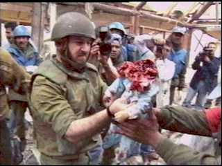
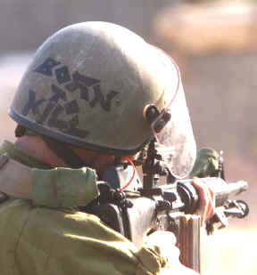
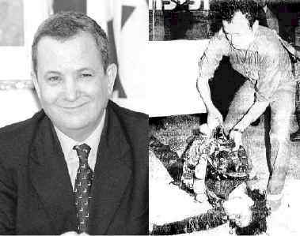
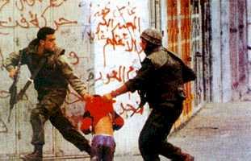
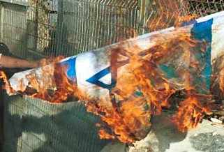

........
........
........
.....has been hacked by m0r0n and nightman of WFD (World's Fantabulous Defacers)!
See the true face of Israel...
(Note: The Israeli Defense Forces will once again tell you this is 'Palestinian Propaganda', but of surely, this is the truth - the truth they don't want you, or the world, to know. )
|
Pop Quiz for Everyone:
Which country alone in the Middle East has nuclear weapons? Answer: Israel Which country in the Middle East refuses to sign the nuclear non-profileration treaty and bars international inspections? Answer: Israel Which country in the Middle East seized the sovereign territory of other nations by military force and continues to occupy it in defiance of United Nations Security Council resolutions? Answer: Israel Which country in the Middle East routinely violates the international borders of another sovereign states with warplanes, artillery, and gunfire? Answer: Israel What American ally in the Middle East has for years sent assassins into other countries to kill its political enemies? (sometimes called exporting terrorism)
Answer: Israel
Answer: Israel
In what country in the Middle East was a high-ranking United Nations diplomat assassinated? Answer: Israel In what country in the Middle East did the man who ordered the assassination of a high-ranking U.N. diplomat become prime minister. Answer: Israel What country in the Middle East blew up an American diplomatic facility in Egypt and attacked a U.S. ship in international waters, killing 33 and wounding 177 American sailors. Answer: Israel Which country on Planet Earth has the 2nd most powerful lobby in the United States of America? Answer: Israel
|
More truths the IDF wants to keep hidden:  Israeli soldiers look over the remains of a baby they beheaded. According to them, the baby was an "Islamic Extremist." So m0sad, this baby was a terrorist?
 An Israeli soldier with "Born to kill" written on the back of his helmet, aims his M-16 assault rifle at Palestinian stone-throwers during Israel's holocaust campaign December 4th in the West Bank town of Bethlehem.
"Born to kill" huh? It says it all.

Barak in 1978 : profaning the corps of Palestinian martyr Dallal Al-Maghrebi And this is supposed to be a "peace partner?!"
 Who are the terrorists in these pictures? The victims...or the victimizers?? The oppressed...or the oppressors? Israel is a racist, fascist, Neo-Nazi state dedicated to systemically kill all Palestinians, as shown above and below.
Israeli soldiers shoot indiscriminately at everything and anything Palestinian. Rocks against missiles, tanks against unarmed children. The Israeli Army even shoots ambulances. . .
Which country in the Middle East is in defiance of 69 United Nations Resolutions? Answer: Israel What country is the United States bombing for years because "U.N. Security Councils must be obeyed?" Answer: Iraq
|
 Thousands of people at Berkeley University
in California protested what
was going to be the speech of criminal Benjamin Netanyahu, ex prime minister
of criminal Israel. Even Jews fed up with Israel and the heinous
atrocities it commits showed up and made their voice heard. Netanyahu
got scared and left after being notified 'his safety could not be
guaranteed.' We salute the Muslims of America and the Jews who are
fighting against the Zionist Israel.
Thousands of people at Berkeley University
in California protested what
was going to be the speech of criminal Benjamin Netanyahu, ex prime minister
of criminal Israel. Even Jews fed up with Israel and the heinous
atrocities it commits showed up and made their voice heard. Netanyahu
got scared and left after being notified 'his safety could not be
guaranteed.' We salute the Muslims of America and the Jews who are
fighting against the Zionist Israel.
The issue:
No issue in the conflict between Israel and the Palestinians is more emotional than Jerusalem. A big reason: because Judaism's holiest site and Islam's third-holiest site are located within the city's boundaries. Half of the city was under Jordanian control until the 1967 war, when it was reunified after Israel drove Jordan out of the West Bank.
The Palestinian position:The Palestinians have always regarded Jerusalem, or Al Quds, as they call it, as the capital of their future state. They want to restore a divide between Israeli and Arab sections, with the religious rights of all guaranteed.
The Israeli position:Israel insists that Jerusalem is its "eternal" capital (although most countries maintain their embassies in Tel Aviv) and that the city will remain undivided under its control, with rights of religious access guaranteed to all.
 =
Links to check out for the REAL truth:
http://www.hoffman-info.com/palestine.html
http://www.cnn.com/2000/WORLD/meast/10/17/mideast.violence.02/

LONG LIVE PALESTINE!
ISRAELIS FIGHT FOR GREED/REVENGE! - WE FIGHT FOR GOD
Members :
m0r0n, Nightman, CyberPunk, B_real , hid03ous, B1n4ry C0d3.
Wanna join us?
E-mail us!
We can be reached
@
Shouts to :- Gforce Pakistan, DoctorNuker, m0s, Iniquity, fighterforislam (thanks for the flash), Cyberpunk, B_real and all of WFD. Prime suspects, Aniclator, Rsh, Hackweiser, ScorpionKTX, laughingeyes, senn (Thanks for supporting the Muslims!) Cooldude and everyone else who support our cause.
Want to know more about us ? Go to
* http://www.cnn.com/2000/TECH/computing/11/03/israel.hacking.ap/index.html
* http://www.thestatesman.net/arc.news.php3?id=20980&type=Pageone&theme=A&dat=2000-10-05
* http://dailynews.yahoo.com/h/zd/20001108/tc/the_new_age_of_hacktivism_1.html
We are grateful to the admin for hosting our page for sometime!
Copyright m0r0n and nightman inc. 2k. All rights and lefts are reserved ;)
Special thanks again to 'fighterforislam' for the heart rending flash.
Admin nothing was deleted/harmed except for your logs which were deleted for our safety reasons. Don't worry! 8=)
He who runs away, lives to "hack" another day.
---EOF---